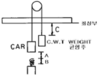
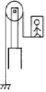
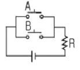
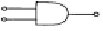
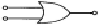
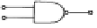
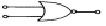

승강기기능사 (2005-01-30 기출문제)
1과목: 승강기개론
1. 순간식 비상정지장치가 적용되는 승강기는?
- 45m/min 이하의 승강기
- 60‾⑤m/min의 승강기
- 120‾40m/min의 승강기
- 300m/min 이상의 승강기
(정답률: 67%)

2. 마이크로 컴퓨터가 엘리베이터 조작방식에서 하지 못하는 역할은?
- 운전관리
- 운행관리
- 전자동 운전
- 구동장치에 대한 속도 지령
(정답률: 33%)
3. 승객용 엘리베이터에서 카 바닥 앞부분의 아랫 방향으로 출입구의 전폭에 걸쳐 수직높이가 몇 mm 이상인 보호판이 견고하게 설치되어 있어야 하는가?
- 450
- 540
- 1450
- 1540
(정답률: 52%)
4. 엘리베이터의 범죄 예방장치가 아닌 것은?
- 각층 강제정지장치
- 방범운전장치
- 방범 카메라 모니터장치
- BGM장치
(정답률: 85%)
5. 카가 최하층에 수평으로 정지되어 있을 때 카와 완충기 거리에 완충기 충격을 더한 수치(A + B)를 균형추와 최상부분 간격(C)과의 거리 관계와 비교하면?

- A + B < C
- A + B > C
- A + B = C
- A + B != C
(정답률: 41%)
6. 에스컬레이터의 감속기로 최근에 가장 많이 사용되는 기어는?
- 웜기어
- 헬리컬 기어
- 평기어
- 랙피니언 기어
(정답률: 44%)
7. 기계실에 반드시 있어야 할 설비가 아닌 것은?
- 조명설비
- 방음문
- 환기설비
- 소화기
(정답률: 63%)
8. 승강기를 4개 부분으로 분류할 때 옳은 것은?
- 권상기, 조속기, 완충기, 로프
- 기계실, 카, 승강로, 승강장
- 제어반, 비상정지장치, 종점스위치, 착상스위치
- 층관리장치, 권상기, 제어반, 조속기
(정답률: 65%)
9. 권상기의 기어레스(Gearless)방식에 대한 설명으로 옳지 않은 것은?
- 전동기의 회전축에 메인 시브를 장착한 방식
- 고속 승강기에 적용
- 전동기의 회전을 감속하기 위해 웜기어 사용
- 동력원은 VVVF 방식을 사용
(정답률: 41%)
10. 유압 엘리베이터에서 진동·소음을 저감시키기 위하여 사용하는 부품은?
- 솔레노이드
- 필터
- 스트레이너
- 사이렌서
(정답률: 65%)
11. 균형체인(Compensating Chain)의 설치 목적은?
- 카의 진동을 방지하기 위해서 설치한다.
- 카의 추락을 방지하기 위해서 설치한다.
- 이동 케이블과 로프의 이동에 따라 변화되는 하중을 보상하기 위해서 설치한다.
- 균형추의 추락을 방지하기 위해서 설치한다.
(정답률: 78%)
12. 카가 최상층 및 최하층을 지나쳐 주행하는 것을 방지하는 것은?
- 리미트스위치
- 균형추
- 인터록 장치
- 정지스위치
(정답률: 79%)
13. 수평보행기의 구조물이 아닌 것은?
- 내측판
- 스탭
- 균형추
- 핸드레일
(정답률: 72%)
14. 일반적으로 기계실의 바닥면적은 승강로 수평 투영면적의 몇 배 이상이어야 하는가?
- 1.5배
- 2배
- 2.5배
- 3배
(정답률: 76%)
15. 유압 엘리베이터를 고장수리할 때 가장 확실히 잠궈야 할 밸브는?
- 복합밸브
- 스톱밸브
- 체크밸브
- 릴리프밸브
(정답률: 70%)
2과목: 안전관리
16. 균형추에 비상정지장치를 설치해야 하는 경우는?
- 정격속도가 360m/min 이상인 승객용 엘리베이터
- 정격속도가 400m/min 이상인 승객용 엘리베이터
- 피트 밑을 사무실 등의 어떤 용도로 사용 중일 때
- 가이드 레일의 길이가 짧은 경우
(정답률: 50%)
17. 백화점에서 가장 많이 사용되고 있는 에스컬레이터의 형식은?
- 600형
- 900형
- 1000형
- 1200형
(정답률: 73%)
18. 권동식 엘리베이터의 카가 최하 정지 위치에 있는 경우에 주로프가 권동에 감기고 남는 권수는 몇 권 이상이어야 하는가?
- 1권
- 2권
- 3권
- 4권
(정답률: 42%)
19. 정전작업 중에 특히 유의할 사항은?
- 명령계통을 일원화 시킨다.
- 주변 사람들에게 감시 시키면서작업한다.
- 작업량을 정하여 작업시킨다.
- 시간을 잘 지켜 작업하도록 유도한다.
(정답률: 43%)
20. 재해조사의 항목으로 볼 수 없는 것은?
- 사업주의 인적사항
- 기인물 및 가해물
- 피해자의 인적사항
- 사고의 형태
(정답률: 71%)
21. 사고가 발생되는 원인으로 볼 수 있는 것은?
- 작업목적 및 내용 이해
- 작업시간의 단축
- 작업순서 및 방법의 확실
- 명령 및 연락계통의 확실
(정답률: 75%)
22. 승강기 시설을 점검하여 다음과 같은 조치를 취하였다. 가장 적절한 조치사항은?
- 퓨즈가 단선되어 철선을 끼웠다.
- 기계실의 조도가 규정치 미달이어서 조명등을 껐다.
- 와이어 로프가 규정치 이상 마모되어 교체를 지시했다.
- 카 내부의 비상용 인터폰이 고장이 나서 제거하였다.
(정답률: 82%)
23. 전기공사를 할 때 어느 작업에서나 필요한 보호장구는?
- 핫스틱
- 방전고무장갑
- 안전허리띠
- 안전모
(정답률: 40%)
24. 전기사고의 직접적인 원인과 관련이 없는 것은?
- 회로의 단락
- 충전부의 노출
- 느슨한 접속
- 전열기부하 사용
(정답률: 40%)
25. 머리의 부상이 격심할 때의 응급치료의 조치로 적당한 것은?
- 수평상태로 눕혀 두어야 한다.
- 머리를 약간 높이 들어주어야 한다.
- 머리를 낮게 하여 준다.
- 머리를 45도이상 높혀주어야 한다.
(정답률: 47%)
26. 사업장내에서 승강기의 조립 또는 해체작업을 할 때 조치 하여야 할 사항이 아닌 것은?
- 작업을 지휘하는 자를 선임하여 지휘자의 책임하에 작업을 실시할 것
- 작업 할 구역에는 관계 근로자외의 자의 출입을 금지 시킬 것
- 악조건의 작업을 할 때에는 근로자에게 위험을 미칠 우려가 있다고 판단되는 경우 작업을 중지시킬 것
- 사용자의 편의를 위하여 야간작업을 하도록 할 것
(정답률: 83%)
27. 정전기로 인한 화재폭발 방지의 필요한 조치는?
- 개폐기 설치
- 전선은 단선 사용
- 접지설비
- 역률 개선
(정답률: 70%)
28. 산업안전보건법의 목적으로 맞는 것은?
- 작업의 표준을 정한다.
- 고용을 확대한다.
- 산업재해를 예방한다.
- 근로자의 최저 생계비를 보장한다.
(정답률: 69%)
29. 에스컬레이터에서 안전회로는 이상이 없으나 운전스위치를 작동시켜도 운전되지 않았을 때는 어느 부분을 점검하는 것이 가장 타당한가?
- 자동회로
- 정지버튼회로
- 과부하계전기
- 핸드레일 구멍의 안전스위치
(정답률: 46%)
30. 엘리베이터용 제어반의 외함 및 금속제 프레임(Frame)은 몇 종 접지공사에 해당하는가?
- 제1종 접지공사
- 제2종 접지공사
- 제3종 접지공사
- 특별 제3종 접지공사
(정답률: 58%)
3과목: 승강기보수
31. 수평보행기의 주의 표지판에서 보이지 않아도 되는 것은?
- 어린이는 반드시 잡고 탈 것
- 핸드레일을 잡고 탈 것
- 유모차나 손수레를 싣지 말 것
- 신발을 신은 상태에서만 탈 것
(정답률: 35%)
32. 유압식 승강기의 피트내에서 점검을 실시할 때 주의해야 할 사항으로 틀린 것은?
- 피트내 조명을 점등한 후 들어갈 것
- 피트에 들어갈 때 기름에 미끄러지지 않도록 주의 할 것
- 기계실과 충분한 연락을 취할 것
- 피트에 들어갈 때는 승강로 문을 닫을 것
(정답률: 68%)
33. 카내의 표시판에 반드시 표시되지 않아도 되는 것은?
- 용도
- 속도
- 적재하중(정원)
- 비상시 조치내용
(정답률: 56%)
34. 피트내에 관한 사항 중 옳지 않은 것은?
- 피트에는 누수가 없고 청결할 것
- 하부 리미트스위치는 위치 및 작동상태가 확실할 것
- 완충기는 녹 및 부식의 손상이 없고 유입완충기의 경우에는 유량이 적절할 것
- 최하층에 카가 정지할 때 카와 완충기 하부의 거리는 균형추의 정상부와의 거리보다 클 것
(정답률: 70%)
35. 기계실이 정상부에 위치한 교류 2단속도 승강기의 기기나 장치가 아닌 것은?
- 권상기(traction machine)
- 제어반(control pannel)
- 조속기(governor machine)
- 모터 제너레터(motor generator)
(정답률: 56%)
36. 유압기기에서 릴리프 밸브의 설명으로 옳은 것은?
- 설정 압력 이상으로 유압이 계속 높아질 때 폭발을 방지하는 안전밸브이다.
- 기름을 통과시키거나 정지시키거나 혹은 방향을 바꾸는 밸브이다.
- 유량을 조절하고 정지시키는 밸브이다.
- 압유의 유량(흐르는 속도)을 바꿈으로서 유압모터가 실린더의 움직이는 속도를 바꾸는 밸브이다.
(정답률: 42%)
37. 침대용 승강기에서 카바닥 앞부분과 승강로 벽과의 수평거리는 몇 ㎜ 이하이어야 하는가?
- 125
- 130
- 135
- 140
(정답률: 59%)
38. 에스컬레이터의 핸드레일에 관한 설명 중 틀린 것은?
- 핸드레일은 디딤판과 속도가 일치해야 하며 역방향으로 승강하여야 한다.
- 하강운전 중 상부 승강장에서 약 15kgf의 인력으로 수평으로 당겨도 정지하지 않아야 한다.
- 핸드레일 인입구에 적절한 보호장치가 설치되어 있어야 한다.
- 핸드레일 인입구에 이물질 및 어린이의 손이 끼이지 않도록 안전스위치가 있어야 한다.
(정답률: 70%)
39. 균형추에 대한 설명으로 옳은 것은?
- 카측에 매달리고 있는 중량과 반대쪽에 매달린 중량의 차를 적게 하여 모터의 출력을 적게 하는 것으로 카의 반대쪽에 매달린 것을 말한다.
- 카측 무게의 밸런스를 잡기 위하여 카 하부에 카의 수평을 잡기 위해 부착한 것을 말한다.
- 전동기의 평형을 유지하기 위하여 전동기의 수평을 맞추기 위해 사용하는 추이다.
- 조속기 로프의 이탈 방지를 위하여 피트에 조속기 로프와 연결된 추이다.
(정답률: 35%)
40. 승강기의 방호장치에 대한 설명으로 틀린 것은?
- 용도에 구분없이 모든 승강기는 도어인터록을 설치한다.
- 화물용 승강기는 수동운전시 도어가 개방되었을 때도 운전이 가능하도록 한다.
- 수동운전시 업다운(up down)버튼조작을 중지하면 자동적으로 정지하여야 한다.
- 로프식 승강기는 반드시 승강로 상부에 2차 정지 스위치를 설치할 필요가 있다.
(정답률: 59%)
41. 조속기(GOVERNOR)의 작동상태를 잘못 설명한 것은?
- 카가 상승하거나 하강하는 어떤 방향에서도 정격속도의 1.3배를 초과하기 전에 조속기 스위치가 동작해야 한다.
- 조속기의 스위치는 작동후 자동으로 복귀되어서는 안된다.
- 조속기의 캣치는 일단 동작하고 난후 자동 복귀된다.
- 조속기 로프가 장력을 잃게 되면 전동기의 주회로를 차단시키는 경우도 있다.
(정답률: 56%)
42. 유압 엘리베이터의 제어반에서 가능하지 못한 것은?
- 절연저항 측정
- 작동시 유압 측정
- 전동기 전류 측정
- 과전류계전기의 작동 확인
(정답률: 25%)
43. 유압식 엘리베이터의 안전장치에 관한 설명으로 옳지 않은 것은?
- 승강기가 상승할 때 유압이 정격치의 1.25배가 넘지 않도록 조절되는 안전밸브장치가 필요하다.
- 동력 차단시 실린더내 오일의 역류로 인한 케이지의 강하를 자동적으로 제지하는 장치를 설치해야 한다.
- 오일의 온도를 섭씨 65도 이상 80도 이하로 유지하기 위한 장치를 설치해야 한다.
- 전동기의 공회전 방지를 위한 장치를 설치해야 한다.
(정답률: 70%)
44. 균형체인과 균형로프의 점검사항이 아닌 것은?
- 연결부위의 이상마모가 있는지를 점검
- 이완상태가 있는지를 점검
- 이상소음이 있는지를 점검
- 양쪽 끝단은 카의 양측에 균등하게 연결되어 있는지를 점검
(정답률: 53%)
45. 권상기(Traction machine)의 점검 사항이 아닌 것은?
- 진동, 소음, 운전의 원활성 등 운전상황의 이상 유무를 살핀다.
- 유(Oil)의 누설 유무를 점검하고 청소한다.
- 브레이크 동작의 양호 여부를 점검하고 조정한다.
- 과부하 검출장치의 동작 여부를 점검한다.
(정답률: 41%)
4과목: 기계,전기기초이론
46. 승강기에 사용되는 T 형 가이드 레일 1본의 길이는 몇 m인가?
- 3
- 5
- 8
- 10
(정답률: 63%)
47. 자전거의 페달에 작용하는 하중은?
- 비틀림 하중
- 휨하중
- 교번하중
- 인장하중
(정답률: 56%)
48. 그림은 유압 엘리베이터 중 1 : 2 로핑방식을 표시한 것이다. 유압실린더의 플런저가 1m 상승하면 엘리베이터내의 승객은 어떻게 이동되겠는가?

- 2m 상승
- 2m 하강
- 4m 상승
- 4m 하강
(정답률: 42%)
49. 전자력에 의하여 접점을 개폐하는 기능을 가진 것은?
- 열동계전기
- 전자계전기
- 리미트스위치
- 유지형 수동스위치
(정답률: 58%)
50. 1Ｊ/s 와 같은 것은?
- 1cal
- 1A
- 860cal
- 1W
(정답률: 44%)
51. 응력변형률 선도에서 하중의 크기가 적을 때 변형이 급격히 증가하기 시작하는 점은?
- 탄성한계점
- 피로한도점
- 응력한도점
- 항복점
(정답률: 43%)
52. 직류전동기에서 전기적 제동방법이 아닌 것은?
- 발전제동
- 회생제동
- 저항제동
- 플러깅
(정답률: 31%)
53. 캠이 가장 많이 사용되는 경우는?
- 요동운동을 직선운동으로 할 때
- 왕복운동을 직선운동으로 할 때
- 회전운동을 직선운동으로 할 때
- 상하운동을 직선운동으로 할 때
(정답률: 64%)
54. 직류 전동기의 속도 제어 방법이 아닌것은?
- 저항 제어법
- 주파수 제어법
- 전압 제어법
- 계자 제어법
(정답률: 57%)
55. 마이크로미터를 이용하여 측정 가능한 것은?
- 미세한 전류
- 작은 길이
- 진동
- 미세한 압력
(정답률: 69%)
56. 10Ω과 15Ω의 저항을 병렬로 연결하고 50A의 전류를 흘렸다면, 10Ω의 저항쪽에 흐르는 전류는 몇 A 인가?
- 10
- 15
- 20
- 30
(정답률: 38%)
57. 자기인덕턴스 0.2 H의 코일에 전류가 0.01초 동안에 3A 변화했을 때 코일에 유도되는 기전력은 몇 V 인가?
- 30
- 40
- 50
- 60
(정답률: 48%)
58. 길이가 1m인 황동봉에 인장하중이 작용하여 길이가 1.007m로 늘어났다면 이 때 보의 변형률은 얼마인가?
- 0.001
- 0.003
- 0.0⑤
- 0.007
(정답률: 62%)
59. 그림과 같은 회로와 원리가 같은 논리기호는?





(정답률: 59%)
60. 전류계를 사용하는 방법으로 옳지 않은 것은?
- 부하전류가 클 때에는 배율기를 사용하여 측정한다.
- 전류가 흐르므로 인체가 접촉되지 않도록 주의하면서 측정한다.
- 전류값을 모를 때에는 높은 값에서 낮은 값으로 조정하면서 측정한다.
- 부하와 직렬로 연결하여 측정한다.
(정답률: 25%)